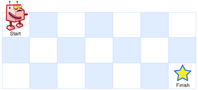
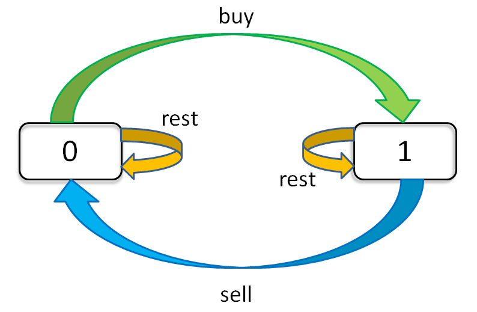

19 高级动态规划
1.动态规划
1.1 递归 & 分治
递归：函数自己调用自己
1 | def recursion(level, param1, param2, ...): |
分治：
1 | def divide_conquer(problem, param1, param2, ...): |
1.2 动态规划 Dynamic Programming
- “Simplifying a complicated problem by breaking it down into simpler sub-problems” (int a recursive manner)
- Divide & Conquer + Optimal substructure (分治 + 最优子结构)
- 顺推形式：动态递推
DP顺推模板
1 | function DP: |
难点：
- DP状态的定义：需要经验，现实问题定义为数组，有可能是一维、二维或三维；
- 状态转移方程怎么写：最简单情况：$ dp[i] = dp[i-1] + dp[i-2] $；更多情况需要求最小值或者累加累减；从k个状态中找到它的最值
1.3 关键点
动态规划 和 递归或者分治 没有根本上的区别（关键看有无最优子结构）
拥有共性： 找到重复子问题
差异性： 最优子结构、中途可以淘汰次优解
2.状态转移方程
2.1 爬楼梯问题
递推公式：$f(n) = f(n-1) + f(n-2), f(1)=1,f(0)=0$
递归：O(2^n)
1 | def f(n): |
递归 + 记忆化搜索：O(n)
1 | def f(n): |
动态规划：O(n)
1 | def f(n): |
动态规划 + 内存优化：O(n), O(1)
1 | def f(n): |
2.2 不同路径

递归公式：$f(x, y) = f(x - 1, y) + f(x, y - 1)$
递归：O(mn), O(mn)
1 | def f(x, y): |
递归 + 记忆化搜索：O(mn), O(mn)
1 | def f(x, y): |
动态规划：O(mn), O(mn)
1 | def f(x, y): |
2.3 打家劫舍
定义方式1：
dp[i]状态的定义：max $ of robbingA[0 → i]- $dp[i] = max(dp[i - 2] + nums, dp[i - 1])$
定义方式2：
dp[i][0]状态定义：max $ of robbingA[0 → i]且没偷nums[i]dp[i][1]状态定义：max $ of robbingA[0 → i]且偷了nums[i]- $dp[i][0] = max(dp[i - 1][0], dp[i - 1][1])$
- $dp[i][1] = dp[i - 1][0] + nums[i]$
2.4 最小路径和
dp[i][j]的状态定义：minPath(A[1→i][1→j])
$dp[i][j] = min(dp[i - 1][j], dp[i][j - 1] + A[i][j])$
2.5 买卖股票的最佳时机

状态定义：dp[i][k][0 or 1] (0 ≤ i ≤ n - 1, i ≤ k ≤ K)
i为天数k为最多交易次数[0, 1]为是否持有股票- 总状态数：
n*K*2中状态
1 | for 0 <= i < n: |
$dp[i][k][0] = max(dp[i - 1][k][0], dp[i - 1][k][1] + prices[i])$
dp[i - 1][k][0]: 选择 restdp[i - 1][k][1] + prices[i]： 选择sell- 今天没有持有股票，有两种可能：
- 昨天就没有持有股票，然后今天选择rest，多以今天还是没有持有股票
- 昨天持有股票，但是今天sell了，所以今天没有持有股票
$dp[i][k][1] = max(dp[i - 1][k][1], dp[i - 1][k - 1][0] - prices[i])$
dp[i - 1][k][1]: 选择restdp[i - 1][k - 1][0] - prices[i]: 选择buy- 今天持有股票，有两种可能：
- 昨天就持有股票，但是今天选择rest，所以今天还持有股票
- 昨天本没有持有股票，但今天选择buy，所以今天持有股票
初始状态：
- $dp[-1][k][0] = dp[i][0][0] = 0$
- $dp[-1][k][1] = dp[i][0][1] = -infinity$
状态转移方程：
- $dp[i][k][0] = max(dp[i - 1][k][0], dp[i - 1][k][1] + prices[i])$
- $dp[i][k][1] = max(dp[i - 1][k][1], dp[i - 1][k - 1][0] - prices[i])$
3.进阶DP习题
复杂度来源：
- 状态拥有更多维度（二维、三维、或者跟过、甚至需要压缩）
- 状态方程更加复杂
3.1 最小花费爬楼梯
1 | 给你一个整数数组 cost ，其中 cost[i] 是从楼梯第 i 个台阶向上爬需要支付的费用。一旦你支付此费用，即可选择向上爬一个或者两个台阶。 |
1 | class Solution { |
3.2 编辑距离
1 | 给你两个单词 word1 和 word2， 请返回将 word1 转换成 word2 所使用的最少操作数 。 |
- BFS + 剪枝（单词的长度范围）
- DP
- 状态定义：
dp[0..i][0..j]， i表示第一个字符串匹配到第二个字符串的长度；j表示第二个字符串匹配到第一个字符串的长度；word1.substr(0, i)与word2.substr(0, j)之间的编辑距离
2.
- 状态定义：
w1和w2的最后一个字符一样
w1 : …x (i)
w2 : …x (j)
edit_dist(w1, w2) = edit_dist(w1[0 : i -1], w2[0, j - 1])
edit_dist(i, j) = edit_dist(i - 1, j - 1)
w1和w2的最后一个字符不一样
w1 : …x (i)
w2 : …y (j)
edit_dist(i, j) = ``min``(edit_dist(i - 1, j - 1) + 1 , edit_dist(i - 1, j ) + 1, edit_dist(i, j - 1) + 1)
edit_dist(i - 1, j - 1) + 1: 替换，编辑距离 + 1edit_dist(i - 1, j) + 1: 删除word1最后一个字符， 编辑距离 + 1edit_dist(i , j - 1) + 1: 删除 word2最后一个字符，编辑距离 + 1
注意，针对第一行，第一列要单独考虑，我们引入 '' 下图所示：

第一行，是 word1 为空变成 word2 最少步数，就是插入操作
第一列，是 word2 为空，需要的最少步数，就是删除操作
1 | class Solution { |